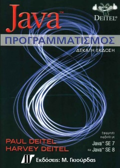
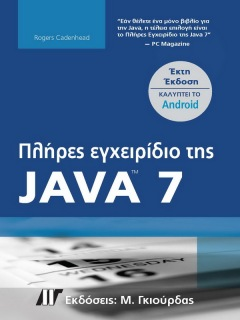
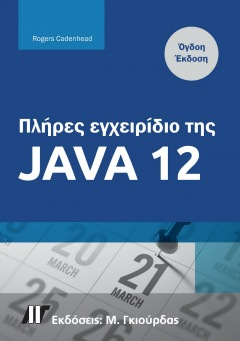
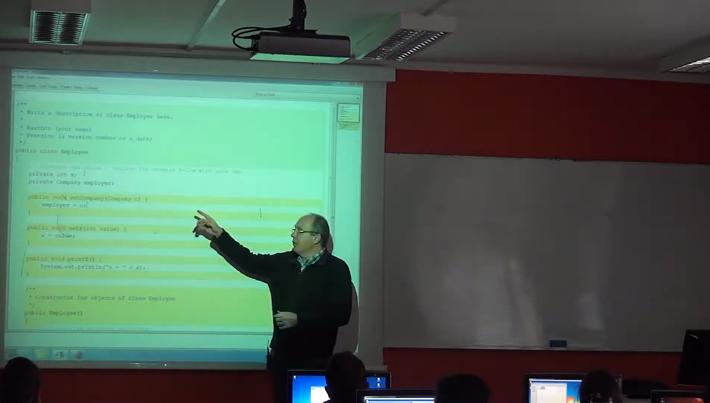

Κληρονομικότητα
Βιβλιογραφία
Java Προγραμματισμός, Η.Μ. Dietel, P.J. Dietel, 10η Έκδοση, 2015. Ελληνική μετάφραση: Εκδόσεις Γκιούρδας (έκδοση Java 8)

Έτος έκδοσης: 2015
Αριθμός Σελίδων: 1664
Αξιολόγηση: (4.2 από 107 αξιολογήσεις)
Το βιβλίο αυτό παρέχει μια σαφή, απλή, ενδιαφέρουσα και διασκεδαστική εισαγωγή στον προγραμματισμό με την Java, χρησιμοποιώντας την προσέγγιση της πρότερης σύνδεσης των αντικειμένων. Το υλικό που περιλαμβάνεται είναι: Πλούσια κάλυψη των βασικών λειτουργιών με πραγματικά παραδείγματα. Φιλική παρουσίαση των κλάσεων και αντικειμένων με πρότερη σύνδεση. Χρήση με την Java™ SE 7 ή την Java™ SE 8 ή και τις δύο. Η Java™ SE 8 καλύπτεται σε προαιρετικές αρθρωτές ενότητες. Java™ SE 8 lambda, ροές δεδομένων και λειτουργικές διασυνδέσεις με προκαθορισμένες και στατικές μεθόδους. Γραφικά περιβάλλοντα χρήστη Swing και JavaFX, γραφικά και πολυμέσα. Δύσκολες Ασκήσεις και βίντεο-σημειώσεις Ολοκληρωμένος χειρισμός εξαιρέσεων. Αρχεία, ροές δεδομένων και σειριοποίηση αντικειμένων. Συγχρονικότητα για βέλτιστη απόδοση σε πολυπύρηνους επεξεργαστές. Άλλα θέματα που καλύπτονται: αναδρομή, αναζήτηση, ταξινόμηση, γενικές συλλογές, δομές δεδομένων, πολυνηματισμός, βάσεις δεδομένων (JDBC™ και JPA), ανάπτυξη Web εφαρμογών, Web υπηρεσίες βασισμένες σε REST. Προαιρετική μελέτη περίπτωσης αντικειμενοστραφούς σχεδιασμού ενός ΑΤΜ.
Πλήρες Εγχειρίδιο της Java 7, 6η έκδοση, R.Cadenhead, 2013. Ελληνική μετάφραση: Εκδόσεις Γκιούρδας

Έτος έκδοσης: 2013
Αριθμός Σελίδων: 720
Αξιολόγηση: (3.8 από 36 αξιολογήσεις)
Σε 21 μαθήματα μόνο, μπορείτε να αποκτήσετε τις γνώσεις και τις ικανότητες που απαιτούνται για την ανάπτυξη εφαρμογών στον υπολογιστή σας και εφαρμογών που εκτελούνται σε κινητές συσκευές Android και tablets. Δεν απαιτείται προηγούμενη εμπειρία προγραμματισμού. Ακολουθώντας τα 21 προσεκτικά σχεδιασμένα μαθήματα αυτού του βιβλίου, καθένας μπορεί να μάθει τα βασικά του προγραμματισμού στην Java. Μάθετε με τον δικό σας ρυθμό. Μπορείτε να διαβάσετε κάθε κεφάλαιο με την σειρά, διασφαλίζοντας ότι κατανοείτε πλήρως όλες τις βασικές έννοιες και μεθοδολογίες, ή μπορείτε να επικεντρωθείτε σε συγκεκριμένα κεφάλαια, προκειμένου να μάθετε τις τεχνικές που σας ενδιαφέρουν περισσότερο. Ελέγξτε τις γνώσεις σας. Κάθε κεφάλαιο τελειώνει με μια ενότητα εργασιών που περιλαμβάνει ερωτήσεις, απαντήσεις και ασκήσεις για περαιτέρω μελέτη. Περιλαμβάνονται ακόμη ερωτήσεις πρακτικής εξάσκησης για την λήψη πιστοποίησης.
Πλήρες Εγχειρίδιο της Java 12, 8η Έκδοση, Roger Candenhead

Έτος έκδοσης: 2023
Αριθμός Σελίδων: 672
Αξιολόγηση: (4.9 από 73 αξιολογήσεις)
Πλήρως ανανεωμένη, ενημερωμένη και διευρυμένη έκδοση ώστε να καλύπτει τις τελευταίες λειτουργίες των Java 11 και 12 Μαθαίνετε να αναπτύσσετε Java εφαρμογές χρησιμοποιώντας το NetBeans – μία εξαιρετική πλατφόρμα προγραμματισμού Ευκολονόητα, πρακτικά παραδείγματα παρουσιάζουν καθαρά τις βασικές αρχές προγραμματισμού σε Java Ανακαλύπτετε πώς μπορείτε να δημιουργήσετε γρήγορα προγράμματα με ένα γραφικό περιβάλλον χρήστη Μαθαίνετε για προγραμματισμό JDBC με τη βάση δεδομένων Derby Μαθαίνετε πώς να χρησιμοποιείτε Εσωτερικές Κλάσεις και Παραστάσεις Lambda Μαθαίνετε για την γρήγορη ανάπτυξη εφαρμογών με το Apache NetBeans Δημιουργείτε ένα παιχνίδι χρησιμοποιώντας Java.
Βιντεοσκοπημένες Διαλέξεις
Διάλεξη 1: Κληρονομικότητα I

Δημιουργός: Κανάλι "Μαθήματα Πληροφορικής"
Διάρκεια: 00:46:39
Αξιολόγηση: (5 από 65 αξιολογήσεις)
Περιγραφή: Σε αυτή τη διάλεξη γίνεται μια εισαγωγή στις βασικές έννοιες της κληρονομικότητας, εστιάζοντας στον τρόπο με τον οποίο κληρονομικά χαρακτηριστικά μεταβιβάζονται από γενιά σε γενιά. Παρουσιάζονται θεμελιώδεις αρχές και παραδείγματα που βοηθούν στη διαμόρφωση βασικής κατανόησης του θέματος.
Διάλεξη 2: Κληρονομικότητα II
Δημιουργός: Κανάλι "Μαθήματα Πληροφορικής"
Διάρκεια: 00:39:24
Αξιολόγηση: (4.1 από 48 αξιολογήσεις)
Περιγραφή: Αυτή η διάλεξη εξετάζει τις κύριες ιδιότητες και τους κανόνες που διέπουν τη μετάδοση των κληρονομικών χαρακτηριστικών. Εμβαθύνει σε θεωρήματα και βασικές μεθόδους ανάλυσης των γονιδιακών χαρακτηριστικών, διευκολύνοντας την κατανόηση της κληρονομικότητας σε μαθηματικό πλαίσιο.
Διάλεξη 3: Κληρονομικότητα III
Δημιουργός: Κανάλι "Μαθήματα Πληροφορικής"
Διάρκεια: 00:42:31
Αξιολόγηση: (4.6 από 67 αξιολογήσεις)
Περιγραφή: Στην τελευταία διάλεξη της σειράς, δίνεται έμφαση στις ειδικές περιπτώσεις και τεχνικές που χρησιμοποιούνται για την ανάλυση κληρονομικών χαρακτηριστικών με βάση μη αρνητικούς όρους. Παρουσιάζονται κριτήρια που βοηθούν στη λεπτομερή μελέτη της γενετικής κληρονομικότητας με πρακτικά παραδείγματα.